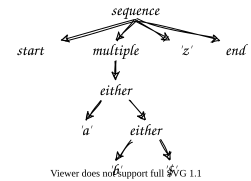
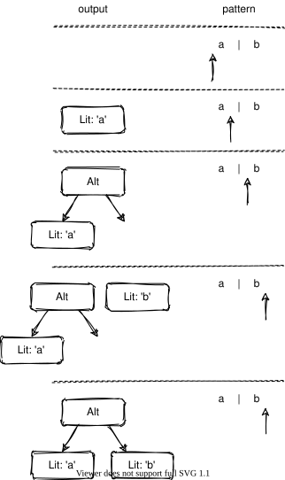
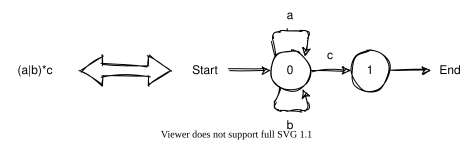

Parsing Expressions
In Chapter 7 we created regular expressions by constructing objects. It takes a lot less typing to write them as strings as we did for HTML selectors, but if we're going to do that we need something to convert those strings to the required objects. In other words, we need to write a parser.
| Meaning | Character |
|---|---|
| Any literal character c | c |
| Beginning of input | ^ |
| End of input | $ |
| Zero or more of the previous thing | * |
| Either/or | | |
| Grouping | (…) |
Table 1 shows the grammar we will handle.
When we are done
we should be able to parse /^(a|b|$)*z$/ as
"start of text",
"any number of 'a', 'b', or '$'",
"a single 'z',
and "end of text".
(We write regular expressions inside slashes to distinguish them from strings.)
To keep things simple,
we will create a tree of objects (Figure 1)
rather than instances of the regular expression classes from Chapter 7;
the exercises will tackle the latter.

Please don't write parsers
Languages that are comfortable for people to read are usually difficult for computers to understand and vice versa, so we need parsers to translate human-friendly notation into computer-friendly representations. However, the world doesn't need more file formats; if you need a configuration file or lookup table, please use CSV, JSON, YAML, or something else that already has an acronym rather than inventing a format of your own.
How can we break text into tokens?
A token is an atom of text,
such as the digits making up a number or the letters making up a variable name.
In our grammar the tokens are the special characters *, |, (, ), ^, and $,
plus any sequence of one or more other characters (which count as one multi-letter token).
This classification guides the design of our parser:
-
If a character is special, create a token for it.
-
If it is a literal then combine it with the current literal if there is one or start a new literal.
-
Since
^and$are either special or regular depending on position, we must treat them as separate tokens or as part of a literal based on where they appear.
We can translate these rules almost directly into code
to create a list of objects whose keys are kind and loc (short for location),
with the extra key value for literal values:
const SIMPLE = {
'*': 'Any',
'|': 'Alt',
'(': 'GroupStart',
')': 'GroupEnd'
}
const tokenize = (text) => {
const result = []
for (let i = 0; i < text.length; i += 1) {
const c = text[i]
if (c in SIMPLE) {
result.push({ kind: SIMPLE[c], loc: i })
} else if (c === '^') {
if (i === 0) {
result.push({ kind: 'Start', loc: i })
} else {
combineOrPush(result, c, i)
}
} else if (c === '$') {
if (i === (text.length - 1)) {
result.push({ kind: 'End', loc: i })
} else {
combineOrPush(result, c, i)
}
} else {
combineOrPush(result, c, i)
}
}
return result
}
The helper function combineOrPush does exactly what its name says.
If the thing most recently added to the list of tokens isn't a literal,
the new character becomes a new token;
otherwise,
we append the new character to the literal we're building:
const combineOrPush = (soFar, character, location) => {
const topIndex = soFar.length - 1
if ((soFar.length === 0) || (soFar[topIndex].token !== 'Lit')) {
soFar.push({ kind: 'Lit', value: character, loc: location })
} else {
soFar[topIndex].value += character
}
}
We can try this out with a three-line test program:
import tokenize from './tokenizer-collapse.js'
const test = '^a^b*'
const result = tokenize(test)
console.log(JSON.stringify(result, null, 2))
[
{
"kind": "Start",
"loc": 0
},
{
"kind": "Lit",
"value": "a",
"loc": 1
},
{
"kind": "Lit",
"value": "^",
"loc": 2
},
{
"kind": "Lit",
"value": "b",
"loc": 3
},
{
"kind": "Any",
"loc": 4
}
]
This simple tokenizer is readable, efficient, and wrong.
The problem is that the expression /ab*/ means "a single a followed by zero or more b".
If we combine the a and b as we read them,
though,
we wind up with "zero or more repetitions of ab".
(Don't feel bad if you didn't spot this:
we didn't notice the problem until we were implementing the next step.)
The solution is to treat each regular character as its own literal in this stage
and then combine things later.
Doing this lets us get rid of the nested if for handling ^ and $ as well:
const SIMPLE = {
'*': 'Any',
'|': 'Alt',
'(': 'GroupStart',
')': 'GroupEnd'
}
const tokenize = (text) => {
const result = []
for (let i = 0; i < text.length; i += 1) {
const c = text[i]
if (c in SIMPLE) {
result.push({ kind: SIMPLE[c], loc: i })
} else if ((c === '^') && (i === 0)) {
result.push({ kind: 'Start', loc: i })
} else if ((c === '$') && (i === (text.length - 1))) {
result.push({ kind: 'End', loc: i })
} else {
result.push({ kind: 'Lit', loc: i, value: c })
}
}
return result
}
export default tokenize
Software isn't done until it's tested, so let's build some Mocha tests for our tokenizer. The listing below shows a few of these along with the output for the full set:
import assert from 'assert'
import tokenize from '../tokenizer.js'
describe('tokenizes correctly', async () => {
it('tokenizes a single character', () => {
assert.deepStrictEqual(tokenize('a'), [
{ kind: 'Lit', value: 'a', loc: 0 }
])
})
it('tokenizes a sequence of characters', () => {
assert.deepStrictEqual(tokenize('ab'), [
{ kind: 'Lit', value: 'a', loc: 0 },
{ kind: 'Lit', value: 'b', loc: 1 }
])
})
it('tokenizes start anchor alone', () => {
assert.deepStrictEqual(tokenize('^'), [
{ kind: 'Start', loc: 0 }
])
})
it('tokenizes start anchor followed by characters', () => {
assert.deepStrictEqual(tokenize('^a'), [
{ kind: 'Start', loc: 0 },
{ kind: 'Lit', value: 'a', loc: 1 }
])
})
// [omit]
it('tokenizes circumflex not at start', () => {
assert.deepStrictEqual(tokenize('a^b'), [
{ kind: 'Lit', value: 'a', loc: 0 },
{ kind: 'Lit', value: '^', loc: 1 },
{ kind: 'Lit', value: 'b', loc: 2 }
])
})
it('tokenizes start anchor alone', () => {
assert.deepStrictEqual(tokenize('$'), [
{ kind: 'End', loc: 0 }
])
})
it('tokenizes end anchor preceded by characters', () => {
assert.deepStrictEqual(tokenize('a$'), [
{ kind: 'Lit', value: 'a', loc: 0 },
{ kind: 'End', loc: 1 }
])
})
it('tokenizes dollar sign not at end', () => {
assert.deepStrictEqual(tokenize('a$b'), [
{ kind: 'Lit', value: 'a', loc: 0 },
{ kind: 'Lit', value: '$', loc: 1 },
{ kind: 'Lit', value: 'b', loc: 2 }
])
})
it('tokenizes repetition alone', () => {
assert.deepStrictEqual(tokenize('*'), [
{ kind: 'Any', loc: 0 }
])
})
it('tokenizes repetition in string', () => {
assert.deepStrictEqual(tokenize('a*b'), [
{ kind: 'Lit', value: 'a', loc: 0 },
{ kind: 'Any', loc: 1 },
{ kind: 'Lit', value: 'b', loc: 2 }
])
})
it('tokenizes repetition at end of string', () => {
assert.deepStrictEqual(tokenize('a*'), [
{ kind: 'Lit', value: 'a', loc: 0 },
{ kind: 'Any', loc: 1 }
])
})
it('tokenizes alternation alone', () => {
assert.deepStrictEqual(tokenize('|'), [
{ kind: 'Alt', loc: 0 }
])
})
it('tokenizes alternation in string', () => {
assert.deepStrictEqual(tokenize('a|b'), [
{ kind: 'Lit', value: 'a', loc: 0 },
{ kind: 'Alt', loc: 1 },
{ kind: 'Lit', value: 'b', loc: 2 }
])
})
it('tokenizes alternation at start of string', () => {
assert.deepStrictEqual(tokenize('|a'), [
{ kind: 'Alt', loc: 0 },
{ kind: 'Lit', value: 'a', loc: 1 }
])
})
it('tokenizes the start of a group alone', () => {
assert.deepStrictEqual(tokenize('('), [
{ kind: 'GroupStart', loc: 0 }
])
})
it('tokenizes the start of a group in a string', () => {
assert.deepStrictEqual(tokenize('a(b'), [
{ kind: 'Lit', value: 'a', loc: 0 },
{ kind: 'GroupStart', loc: 1 },
{ kind: 'Lit', value: 'b', loc: 2 }
])
})
it('tokenizes the end of a group alone', () => {
assert.deepStrictEqual(tokenize(')'), [
{ kind: 'GroupEnd', loc: 0 }
])
})
it('tokenizes the end of a group at the end of a string', () => {
assert.deepStrictEqual(tokenize('a)'), [
{ kind: 'Lit', value: 'a', loc: 0 },
{ kind: 'GroupEnd', loc: 1 }
])
})
// [/omit]
it('tokenizes a complex expression', () => {
assert.deepStrictEqual(tokenize('^a*(bcd|e^)*f$gh$'), [
{ kind: 'Start', loc: 0 },
{ kind: 'Lit', loc: 1, value: 'a' },
{ kind: 'Any', loc: 2 },
{ kind: 'GroupStart', loc: 3 },
{ kind: 'Lit', loc: 4, value: 'b' },
{ kind: 'Lit', loc: 5, value: 'c' },
{ kind: 'Lit', loc: 6, value: 'd' },
{ kind: 'Alt', loc: 7 },
{ kind: 'Lit', loc: 8, value: 'e' },
{ kind: 'Lit', loc: 9, value: '^' },
{ kind: 'GroupEnd', loc: 10 },
{ kind: 'Any', loc: 11 },
{ kind: 'Lit', loc: 12, value: 'f' },
{ kind: 'Lit', loc: 13, value: '$' },
{ kind: 'Lit', loc: 14, value: 'g' },
{ kind: 'Lit', loc: 15, value: 'h' },
{ kind: 'End', loc: 16 }
])
})
})
> stjs@1.0.0 test /u/stjs
> mocha */test/test-*.js "-g" "tokenizes correctly"
tokenizes correctly
✓ tokenizes a single character
✓ tokenizes a sequence of characters
✓ tokenizes start anchor alone
✓ tokenizes start anchor followed by characters
✓ tokenizes circumflex not at start
✓ tokenizes start anchor alone
✓ tokenizes end anchor preceded by characters
✓ tokenizes dollar sign not at end
✓ tokenizes repetition alone
✓ tokenizes repetition in string
✓ tokenizes repetition at end of string
✓ tokenizes alternation alone
✓ tokenizes alternation in string
✓ tokenizes alternation at start of string
✓ tokenizes the start of a group alone
✓ tokenizes the start of a group in a string
✓ tokenizes the end of a group alone
✓ tokenizes the end of a group at the end of a string
✓ tokenizes a complex expression
19 passing (12ms)
How can we turn a list of tokens into a tree?
We now have a list of tokens,
but we need a tree that captures the nesting introduced by parentheses
and the way that * applies to whatever comes before it.
Let's trace a few cases in order to see how to build this tree:
-
If the regular expression is
/a/, we create aLittoken for the lettera(where "create" means "append to the output list"). -
What if the regular expression is
/a*/? We first create aLittoken for theaand append it to the output list. When we see the*, we take thatLittoken off the tail of the output list and replace it with anAnytoken that has theLittoken as its child. -
Our next thought experiment is
/(ab)/. We don't know how long the group is going to be when we see the(, so we put the parenthesis onto the output as a marker. We then add theLittokens for theaandbuntil we see the), at which point we pull tokens off the end of the output list until we get back to the(marker. When we find it, we put everything we have temporarily collected into aGrouptoken and append it to the output list. This algorithm automatically handles/(a*)/and/(a(b*)c)/. -
What about
/a|b/? We append aLittoken fora, get the|and---and we're stuck, because we don't yet have the next token we need to finish building theAlt.
One way to solve this problem is to check if the thing on the top of the stack is waiting to combine
each time we append a new token.
However,
this doesn't handle /a|b*/ properly.
The pattern is supposed to mean "one a or any number of b",
but the check-and-combine strategy will turn it into the equivalent of /(a|b)*/.
A better (i.e., correct) solution is
to leave some partially-completed tokens in the output and compress them later
(Figure 2).
If our input is the pattern /a|b/, we can:
-
Append a
Littoken fora. -
When we see
|, make thatLittoken the left child of theAltand append that without filling in the right child. -
Append the
Littoken forb. -
After all tokens have been handled, look for partially-completed
Alttokens and make whatever comes after them their right child.
Again, this automatically handles patterns like /(ab)|c*|(de)/.

It's time to turn these ideas into code. The main structure of our parser is:
import assert from 'assert'
import tokenize from './tokenizer.js'
const parse = (text) => {
const result = []
const allTokens = tokenize(text)
for (let i = 0; i < allTokens.length; i += 1) {
const token = allTokens[i]
const last = i === allTokens.length - 1
handle(result, token, last)
}
return compress(result)
}
We handle tokens case-by-case (with a few assertions to check that patterns are well formed):
const handle = (result, token, last) => {
if (token.kind === 'Lit') {
result.push(token)
} else if (token.kind === 'Start') {
assert(result.length === 0,
'Should not have start token after other tokens')
result.push(token)
} else if (token.kind === 'End') {
assert(last,
'Should not have end token before other tokens')
result.push(token)
} else if (token.kind === 'GroupStart') {
result.push(token)
} else if (token.kind === 'GroupEnd') {
result.push(groupEnd(result, token))
} else if (token.kind === 'Any') {
assert(result.length > 0,
`No operand for '*' (location ${token.loc})`)
token.child = result.pop()
result.push(token)
} else if (token.kind === 'Alt') {
assert(result.length > 0,
`No operand for '*' (location ${token.loc})`)
token.left = result.pop()
token.right = null
result.push(token)
} else {
assert(false, 'UNIMPLEMENTED')
}
}
When we find the ) that marks the end of a group,
we take items from the end of the output list
until we find the matching start
and use them to create a group:
const groupEnd = (result, token) => {
const group = {
kind: 'Group',
loc: null,
end: token.loc,
children: []
}
while (true) {
assert(result.length > 0,
`Unmatched end parenthesis (location ${token.loc})`)
const child = result.pop()
if (child.kind === 'GroupStart') {
group.loc = child.loc
break
}
group.children.unshift(child)
}
return group
}
Finally,
when we have finished with the input,
we go through the output list one last time to fill in the right side of Alts:
const compress = (raw) => {
const cooked = []
while (raw.length > 0) {
const token = raw.pop()
if (token.kind === 'Alt') {
assert(cooked.length > 0,
`No right operand for alt (location ${token.loc})`)
token.right = cooked.shift()
}
cooked.unshift(token)
}
return cooked
}
Once again, it's not done until we've tested it:
import assert from 'assert'
import parse from '../parser.js'
describe('parses correctly', async () => {
it('parses the empty string', () => {
assert.deepStrictEqual(parse(''), [])
})
it('parses a single literal', () => {
assert.deepStrictEqual(parse('a'), [
{ kind: 'Lit', loc: 0, value: 'a' }
])
})
it('parses multiple literals', () => {
assert.deepStrictEqual(parse('ab'), [
{ kind: 'Lit', loc: 0, value: 'a' },
{ kind: 'Lit', loc: 1, value: 'b' }
])
})
// [omit]
it('parses start anchors', () => {
assert.deepStrictEqual(parse('^a'), [
{ kind: 'Start', loc: 0 },
{ kind: 'Lit', loc: 1, value: 'a' }
])
})
it('handles circumflex not at start', () => {
assert.deepStrictEqual(parse('a^'), [
{ kind: 'Lit', loc: 0, value: 'a' },
{ kind: 'Lit', loc: 1, value: '^' }
])
})
it('parses end anchors', () => {
assert.deepStrictEqual(parse('a$'), [
{ kind: 'Lit', loc: 0, value: 'a' },
{ kind: 'End', loc: 1 }
])
})
it('parses circumflex not at start', () => {
assert.deepStrictEqual(parse('$a'), [
{ kind: 'Lit', loc: 0, value: '$' },
{ kind: 'Lit', loc: 1, value: 'a' }
])
})
it('parses empty groups', () => {
assert.deepStrictEqual(parse('()'), [
{ kind: 'Group', loc: 0, end: 1, children: [] }
])
})
it('parses groups containing characters', () => {
assert.deepStrictEqual(parse('(a)'), [
{
kind: 'Group',
loc: 0,
end: 2,
children: [
{ kind: 'Lit', loc: 1, value: 'a' }
]
}
])
})
it('parses two groups containing characters', () => {
assert.deepStrictEqual(parse('(a)(b)'), [
{
kind: 'Group',
loc: 0,
end: 2,
children: [
{ kind: 'Lit', loc: 1, value: 'a' }
]
},
{
kind: 'Group',
loc: 3,
end: 5,
children: [
{ kind: 'Lit', loc: 4, value: 'b' }
]
}
])
})
it('parses any', () => {
assert.deepStrictEqual(parse('a*'), [
{
kind: 'Any',
loc: 1,
child: { kind: 'Lit', loc: 0, value: 'a' }
}
])
})
it('parses any of group', () => {
assert.deepStrictEqual(parse('(ab)*'), [
{
kind: 'Any',
loc: 4,
child: {
kind: 'Group',
loc: 0,
end: 3,
children: [
{ kind: 'Lit', loc: 1, value: 'a' },
{ kind: 'Lit', loc: 2, value: 'b' }
]
}
}
])
})
it('parses alt', () => {
assert.deepStrictEqual(parse('a|b'), [
{
kind: 'Alt',
loc: 1,
left: { kind: 'Lit', loc: 0, value: 'a' },
right: { kind: 'Lit', loc: 2, value: 'b' }
}
])
})
it('parses alt of any', () => {
assert.deepStrictEqual(parse('a*|b'), [
{
kind: 'Alt',
loc: 2,
left: {
kind: 'Any',
loc: 1,
child: { kind: 'Lit', loc: 0, value: 'a' }
},
right: { kind: 'Lit', loc: 3, value: 'b' }
}
])
})
// [/omit]
it('parses alt of groups', () => {
assert.deepStrictEqual(parse('a|(bc)'), [
{
kind: 'Alt',
loc: 1,
left: { kind: 'Lit', loc: 0, value: 'a' },
right: {
kind: 'Group',
loc: 2,
end: 5,
children: [
{ kind: 'Lit', loc: 3, value: 'b' },
{ kind: 'Lit', loc: 4, value: 'c' }
]
}
}
])
})
})
> stjs@1.0.0 test /u/stjs
> mocha */test/test-*.js "-g" "parses correctly"
parses correctly
✓ parses the empty string
✓ parses a single literal
✓ parses multiple literals
✓ parses start anchors
✓ handles circumflex not at start
✓ parses end anchors
✓ parses circumflex not at start
✓ parses empty groups
✓ parses groups containing characters
✓ parses two groups containing characters
✓ parses any
✓ parses any of group
✓ parses alt
✓ parses alt of any
✓ parses alt of groups
15 passing (11ms)
While our final parser is less than 90 lines of code, it is doing a lot of complex things. Compared to parsers for things like JSON and YAML, though, it is still very simple. If we have more operators with different precedences we should switch to the shunting-yard algorithm, and if we need to handle a language like JavaScript we should explore tools like ANTLR, which can generate a parser automatically given a description of the language to be parsed. As we said at the start, though, if our design requires us to write a parser we should try to come up with a better design. CSV, JSON, YAML, and other formats have their quirks, but at least they're broken the same way everywhere.
The limits of computing
One of the most important theoretical results in computer science is that every formal language corresponds to a type of abstract machine and vice versa, and that some languages (or machines) are more or less powerful than others. For example, every regular expression corresponds to a finite state machine (FSM) like the one in Figure 3. As powerful as FSMs are, they cannot match things like nested parentheses or HTML tags, and attempting to do so is a sin. If you add a stack to the system you can process a much richer set of languages, and if you add two stacks you have something equivalent to a Turing Machine that can do any conceivable computation. Conery2021 presents this idea and others for self-taught developers.

Exercises
Create objects
Modify the parser to return instances of classes derived from RegexBase.
Escape characters
Modify the parser to handle escape characters,
so that (for example) \* is interpreted as "a literal asterisk"
and \\ is interpreted as "a literal backslash".
Lazy matching
Modify the parser so that *? is interpreted as a single token
meaning "lazy match zero or more".
Character sets
Modify the parser so that expressions like [xyz] are interpreted to mean
"match any one of the characters x, y, or z".
Back reference
Modify the tokenizer so that it recognizes \1, \2, and so on to mean "back reference".
The number may contain any number of digits.
Named groups
-
Modify the tokenizer to recognize named groups. For example, the named group
/(?<triple>aaa)/would create a named group calledtriplethat matches exactly three consecutive occurrences of 'a'. -
Write Mocha tests for your modified tokenizer. Does it handle nested named groups?
Object streams
Write a parser that turns files of key-value pairs separated by blank lines into objects. For example, if the input is:
left: "left value"
first: 1
middle: "middle value"
second: 2
right: "right value"
third: 3
then the output will be:
[
{left: "left value", first: 1},
{middle: "middle value", second: 2},
{right: "right value", third: 3}
]
Keys are always upper- and lower-case characters; values may be strings in double quotes or unquoted numbers.
Tokenize HTML
-
Write a tokenizer for a subset of HTML that consists of:
- Opening tags without attributes, such as
<div>and<p> - Closing tags, such as
</p>and</div> - Plain text between tags that does not contain '<' or '>' characters
- Opening tags without attributes, such as
-
Modify the tokenizer to handle
key="value"attributes in opening tags. -
Write Mocha tests for your tokenizer.
The Shunting-Yard Algorithm
-
Use the shunting-yard algorithm to implement a tokenizer for a simple subset of arithmetic that includes:
- single-letter variable names
- single-digit numbers
- the
+,*, and^operators, where+has the lowest precedence and^has the highest
-
Write Mocha tests for your tokenizer.
Handling errors
-
What does the regular expression tokenizer do with expressions that contain unmatched opening parentheses like
/a(b/? What about expressions that contain unmatched closing parentheses like/ab)/? -
Modify it so it produces a more useful error message.